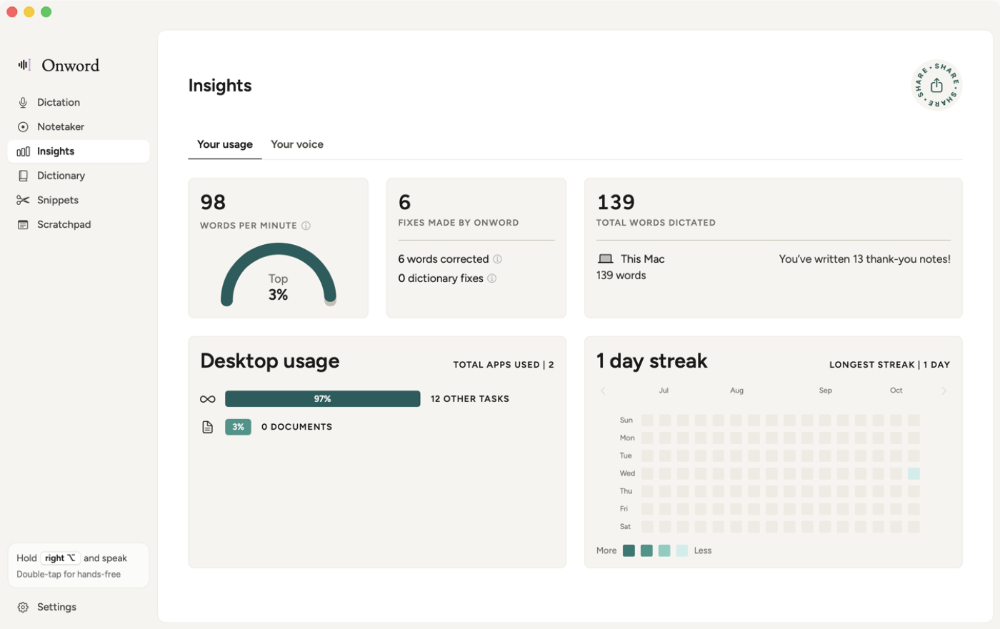

Speak, and it’s written.
Onword is a free, open-source app for macOS. Hold a key in any app, talk, and let go — your words appear at the cursor. Speech recognition runs entirely on your Mac.
Requires a Mac with Apple Silicon on macOS 14 or later. Or install from Terminal:
curl -fsSL https://raw.githubusercontent.com/h-thavy/onword/main/scripts/install.sh | bash

What Onword does
Dictation
Hold a key, talk, let go. Filler words disappear, “scratch that” deletes your last sentence, and 99 languages are supported.
Notetaker
Records calls without a bot joining, with a live transcript, who-said-what, and a summary written on your Mac.
Flow Bar
A small bar above the Dock to start dictating or taking notes, and to see your upcoming meetings.
Private by design
No account, no subscription, no server. Your voice and your text stay on your Mac.
Google Calendar
Connecting Google Calendar is optional. If you click Connect next to Google Calendar in Settings → Connections (or Connect Google Calendar on the Notetaker page), Onword asks Google for read-only access to your calendars so it can:
- show your upcoming meetings in the Flow Bar and the Notetaker page;
- let you join a video call and start meeting notes in one click;
- name the meeting and its participants in your notes.
Onword talks to Google directly from your Mac — there is no Onword server. It never changes, creates or deletes events, and never sells or shares your data. You can disconnect at any time in Settings, which also revokes Onword’s access with Google. Details are in the privacy policy.